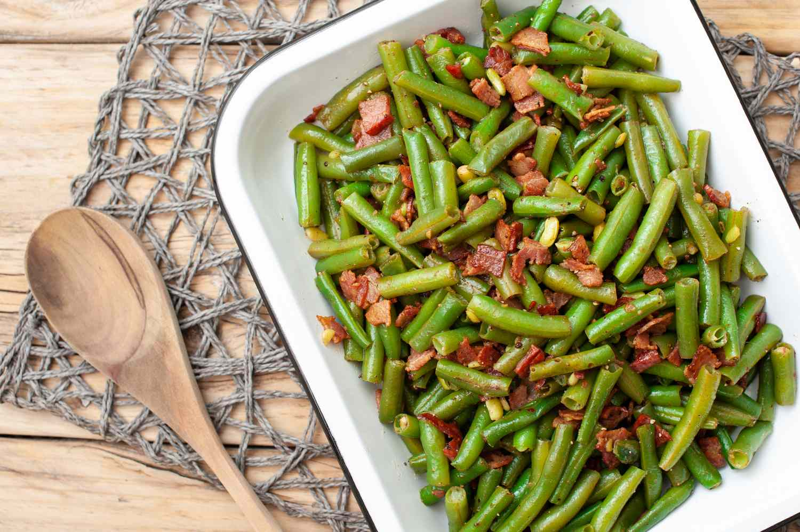

Fresh Beans

Wonderful side dish that will make even the green bean haters beg for more. Created from my own trial and error. It is perfect now.
Ingredients
- 1 pound fresh green beans, trimmed
- 2 tablespoons butter
- minced onion
- minced garlic
- sesame seeds
- soy sauce
- mayonnaise
- sriracha hot sauce
- ground allspice
- salt and ground black pepper to taste
Preparation
- Place a steamer insert into a saucepan and fill with water to just below the bottom of the steamer. Bring water to a boil. Add green beans, cover, and steam until tender, 2 to 6 minutes.
- Melt butter in a saucepan over medium heat; cook and stir onion and garlic for 2 minutes. Add sesame seeds; cook and stir until sesame seeds are golden brown, 3 to 5 minutes.
- Mix soy sauce, mayonnaise, sriracha hot sauce, and allspice into onion mixture. Add green beans and toss to coat; season with salt and pepper.